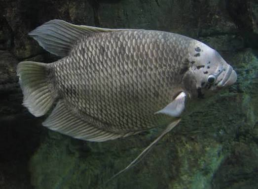
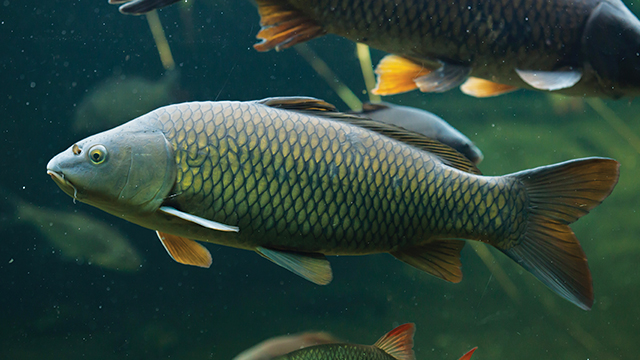
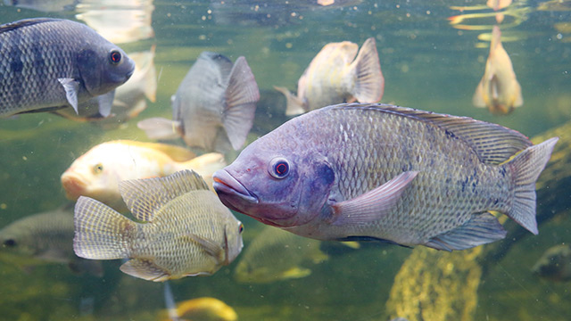
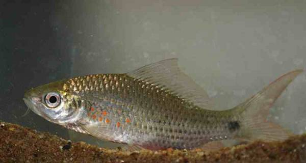

Kolam Ikan Keluarga Ciamis
Menyediakan Ikan Mas, Gurame, Mujair, dan Nilem langsung dari kolam keluarga untuk pembeli lokal maupun luar desa, khususnya saat kondisi panen darurat.
Mengenal sistem pemeliharaan ikan air tawar keluarga dan langkah cepat saat menghadapi penyusutan aliran air sungai.
AquaHarvest merupakan platform katalog digital yang dikembangkan untuk mengelola dan memasarkan hasil perikanan air tawar milik keluarga. Kegiatan utama kolam kami adalah memelihara dan membesarkan berbagai jenis ikan air tawar dengan mengandalkan pasokan aliran air dari kali sekitar.
Namun, ketika pasokan air kali tiba-tiba surut, ikan yang ada di kolam harus segera dipanen dan dijual secepat mungkin agar tidak mengalami kerugian. Website ini hadir untuk memperluas informasi penjualan hingga ke luar desa.
Memperluas pemasaran dari yang sebelumnya hanya mengandalkan pembeli lokal sekitar kolam agar dapat menjangkau pembeli maupun pengepul dari luar desa secara maksimal.
Menjadi sarana informasi cepat saat status Panen Darurat aktif akibat pasokan air sungai menyusut sehingga stok ikan segera terserap pasar.
Menyajikan ukuran, status ketersediaan (Panen Darurat atau Stok Reguler), dan harga per kilogram secara jelas sebelum transaksi.
Pilih filter Panen Darurat atau Stok Reguler untuk melihat kondisi terkini masing-masing komoditas ikan di kolam kami.

⚡ PANEN DARURAT Siap AngkutRp 60.000 / kg

⚡ PANEN DARURAT Siap AngkutRp 30.000 / kg

STOK REGULER TerpantauRp 25.000 / kg

STOK REGULER TerpantauRp 30.000 / kg
Kolam kami pada dasarnya digunakan untuk memelihara dan membesarkan ikan. Penjualan dilakukan saat kondisi tertentu, terutama ketika pasokan air dari kali surut sehingga ikan perlu segera dipanen dan dijual agar tidak mengalami kerugian.
Kolam diutamakan untuk budidaya/pemeliharaan ikan. Panen Darurat diaktifkan ketika pasokan air sungai menyusut atau berhenti.
Selain melayani warga sekitar, informasi cepat ini membantu menjangkau pembeli di luar desa agar stok panen darurat bisa terjual optimal.
Pembeli dapat langsung memilih jenis ikan di katalog atau menghubungi kontak untuk menanyakan ketersediaan panen.
Dokumentasi visual jenis ikan air tawar yang dipelihara di kolam keluarga.
Salah satu komoditas utama yang dipelihara di kolam untuk kebutuhan konsumsi dan panen darurat.
Ikan konsumsi bernilai jual tinggi yang dibesarkan dengan memperhatikan kualitas air kolam.
Jenis ikan air tawar yang banyak diminati pembeli lokal maupun pembeli dari luar desa.
Komoditas ikan air tawar khas yang turut melengkapi variasi hasil panen kolam keluarga.
Jawaban singkat seputar sistem pemeliharaan kolam, skema panen darurat saat pasokan air sungai surut, serta pemesanan ikan.
Tidak selalu. Kolam pada dasarnya digunakan untuk memelihara dan membesarkan ikan. Penjualan dilakukan pada kondisi tertentu, terutama saat pasokan air dari sungai surut sehingga ikan perlu segera dipanen dan dijual agar tidak rugi.
Panen Darurat menandakan ikan perlu segera dipanen dan dipasarkan karena kondisi debit air menyusut, sedangkan Stok Reguler adalah komoditas yang kondisi airnya terpantau aman dan dapat dipesan secara terjadwal.
Ya, selain melayani warga sekitar, website katalog dan informasi ini juga disiapkan untuk memperluas jangkauan pemasaran hingga pembeli atau pengepul dari luar desa agar hasil panen dapat terserap optimal.
Kamu bisa melihat daftar harga dan status di bagian Katalog Ikan, lalu melanjutkan pemesanan melalui formulir di bagian Kontak.
Hubungi kami untuk menanyakan ketersediaan stok ikan, jadwal panen darurat saat air kali surut, atau koordinasi pembelian untuk wilayah lokal maupun luar desa.
Silakan isi formulir di samping untuk mengirim pesan atau simulasi pemesanan ikan sesuai kebutuhan Anda.